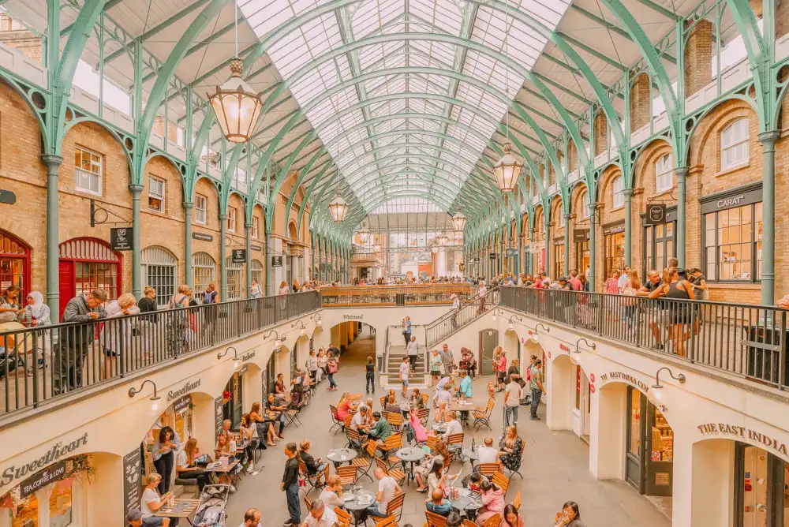
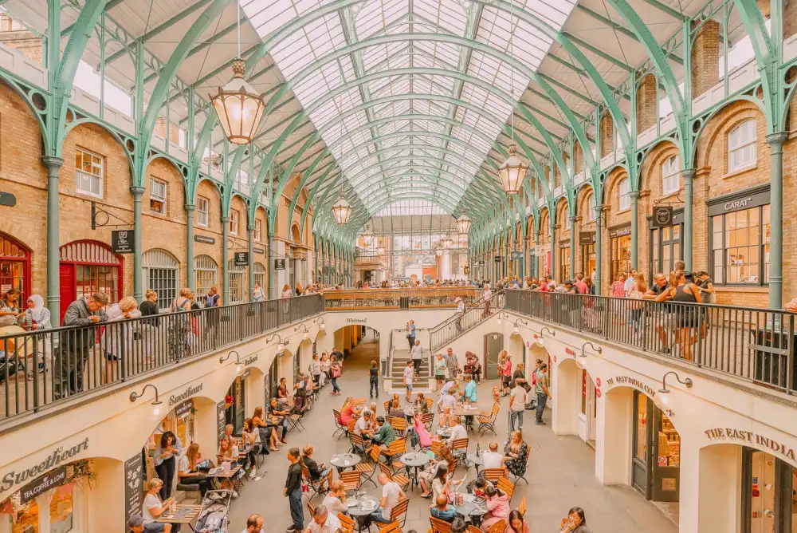

Why London?
London is the city of...
London, the capital of England and the United Kingdom, is a 21st-century city with history stretching back to Roman times. At its centre stand the imposing Houses of Parliament, the iconic ‘Big Ben’ clock tower and Westminster Abbey, site of British monarch coronations. Across the Thames River, the London Eye observation wheel provides panoramic views of the South Bank cultural complex, and the entire city.
As one of the world's major global cities, London exerts a strong influence on its arts, entertainment, fashion, commerce and finance, education, health care, media, science and technology, tourism, and transport and communications. Its GDP (€801.66 billion in 2017) makes it the largest urban economy in Europe, and it is one of the major financial centres in the world. With Europe's largest concentration of higher education institutions, it is home to some of the highest-ranked academic institutions in the world—Imperial College London in natural and applied sciences, the London School of Economics in social sciences, and the comprehensive University College London. London is the most visited city in Europe and has the busiest city airport system in the world. The London Underground is the oldest rapid transit system in the world. London is home to the most 5-star hotels of any city.
London has four World Heritage Sites: the Tower of London; Kew Gardens; the combined Palace of Westminster, Westminster Abbey, and St Margaret's Church; and also the historic settlement in Greenwich, where the Royal Observatory, Greenwich defines the prime meridian (0° longitude) and Greenwich Mean Time. Other landmarks include Buckingham Palace, the London Eye, Piccadilly Circus, St Paul's Cathedral, Tower Bridge, and Trafalgar Square.
Restuarants
My favourite Restaurants in London
The Pelican
Airy modern rethinking of a Victorian pub with locally brewed beer and a classic British menu.
Address:
45 All Saints Rd, London, W11 1HE
What I like about it
A great pub which becam the cornerstone of Notting Hills local community. They focus on local producers who use sustainable production methods. Great for a special evening.
KILN
Casual open kitchen cooking noodles & Thai-inspired dishes using wood-burning ovens and grills.
Address:
58 Brewer St, London, W1F 9TL
What I like about it
This part of Soho is a great place for eating different Asian cuisines at a bar seat with a direct view of the chefs in action. The food is mind blowing and full of flavour and spice.
Le Petit Maison
Chef Raphael Duntoye serves upscale French Mediterranean food to chic crowd in smart dining room.
Address:
53-54 Brook's Mews, London, W1K 4EG
What I like about it
Tucked away in a quiet mews behind Claridge’s in the heart of Mayfair. They aim with every dish they serve at LPM to create a mouthful of food that will not be forgotten.
Gallery
My photos from London
 
